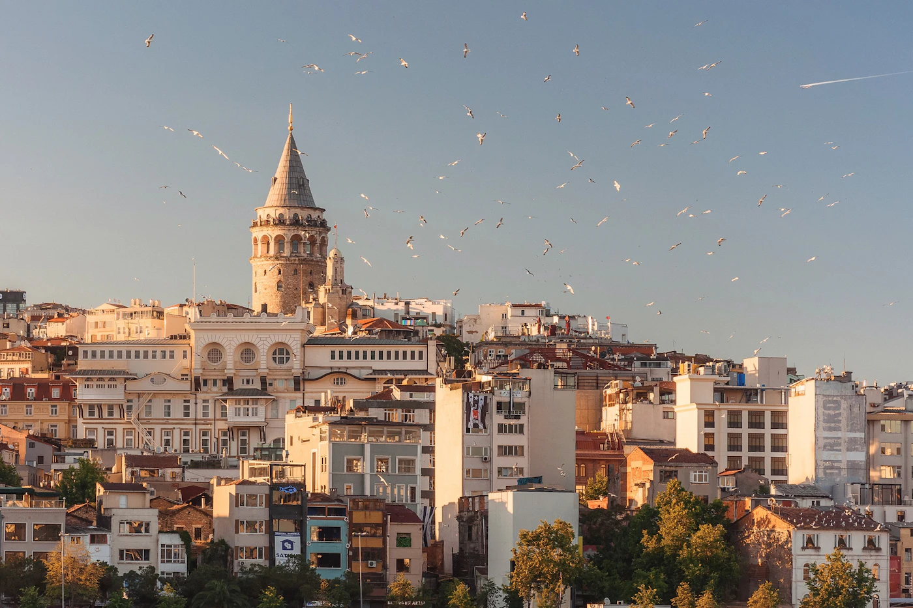
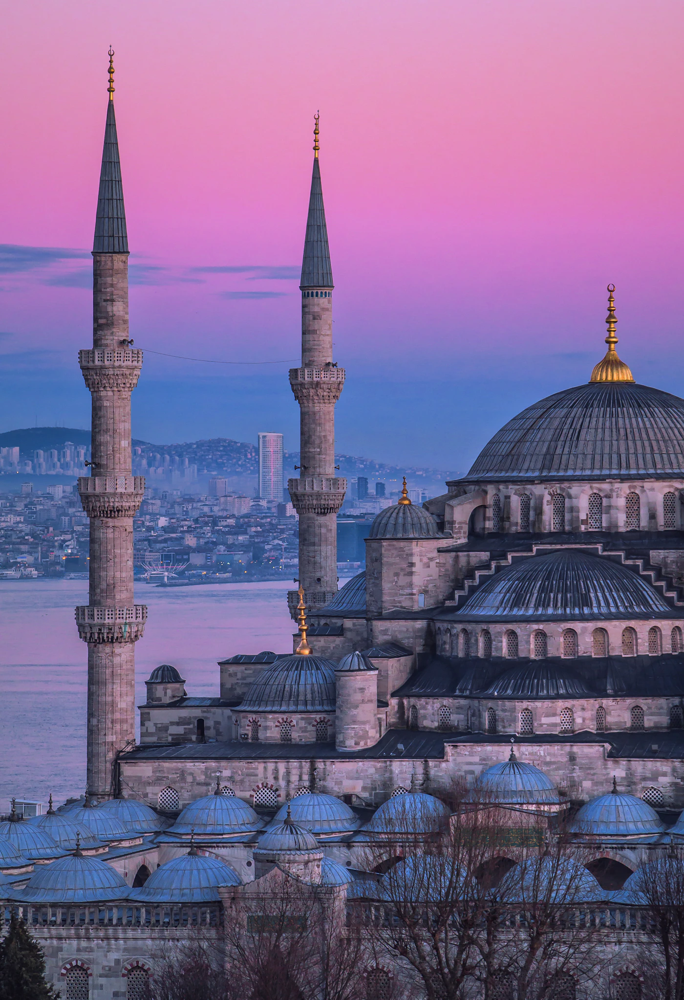

Vodiči / Istanbul
Istanbul — kad ići, aerodrom, Bosfor, šta obavezno vidi

Kad ići u Istanbul — najbolje vreme bez velike gužve
Proleće (april–maj) i jesen (septembar–oktobar) su idealni — blage temperature, manje turista nego leti i najbolje svetlo za fotografije Bosfora. Leto (jul–avgust) je vruće i najgužvanije, pogotovo oko Sultanahmeta. Zima je blaga ali kišovita, dobra za muzeje i zatvorene atrakcije uz nešto niže cene smeštaja. Ako putuješ tokom Ramazana, imaj u vidu da neki lokali i radno vreme mogu biti drugačiji.
Aerodrom u Istanbulu — IST ili SAW, i put do centra
Istanbul ima dva aerodroma. Istanbul Airport (IST) je veći i noviji, na evropskoj strani, oko 40 km od centra — do grada stižeš Havaist autobusom ili kombinacijom metroa (M11 pa M2). Sabiha Gökçen (SAW) je na azijskoj strani, često sa jeftinijim letovima niskobudžetnih kompanija, sa Havabus autobusom do centra. Taksi/Uber postoji sa oba aerodroma, ali je vožnja duža i skuplja u gužvi. Unutar grada, trajekt (vapur) između evropske i azijske strane je jeftin, brz i deo svakodnevnog života — vredi ga iskoristiti makar jednom radi pogleda na grad.
Koliko košta putovanje u Istanbul — orijentacione cene
- Istanbulkart — kartica za sav javni prevoz (metro, autobus, trajekt), kupuje se na kiosku ili automatu; mnogo jeftinije od pojedinačnih taksi vožnji.
- Muzejske ulaznice (Topkapi palata, Bazilika cisterna, muzejski deo Aja Sofije) — cene se menjaju iz godine u godinu, računaj oko 25–30€ ukupno ako planiraš sve glavne atrakcije; unutrašnjost Plave džamije je besplatna.
- Obrok u lokalu — 8–15€ po osobi van turističke zone; u samom Sultanahmetu cene su znatno više za sličnu hranu.
- Riblji sendvič (balık ekmek) kod Galata mosta — jedan od najjeftinijih i najautentičnijih obroka u gradu, svega par evra.
Šta obavezno vidi u Istanbulu za 3–4 dana
- Aja Sofija i Plava džamija — jedna naspram druge u Sultanahmetu, idi rano ujutru da izbegneš najveću gužvu.
- Topkapi palata — nekadašnja rezidencija osmanskih sultana, računaj pola dana za detaljniju posetu.
- Veliki bazar i Začinska pijaca — cenkanje je uobičajeno, drži se orijentacione cene pre nego što uđeš u razgovor.
- Vožnja brodom Bosforom — najbolji način da vidiš oba kontinenta i mostove, obavezno makar jednom u poseti.
- Galata kula i most — pogled na Zlatni rog i staru varoš, dobro mesto za zalazak sunca.

Gde jesti u Istanbulu — lokalna hrana koju treba probati
Za bolju cenu i autentičniji ukus, izbegavaj restorane odmah oko Sultanahmeta i pomeri se ka Karakoyu ili azijskoj strani. Obavezno probaj: simit (turski đevrek) sa uličnih tezgi za doručak, lahmacun i kebab u lokalnim lokantama, balık ekmek kod Galata mosta i večeru uz meze i rakiju u kvartu Karaköy. Turska kafa i baklava su obavezan završetak obroka.
Skrivene lokacije u Istanbulu van glavnih ruta
- Balat — šareni kvart sa starim kućama i uličicama, sve popularniji za fotografije ali još uvek manje gužve nego u Sultanahmetu.
- Çukurcuma — kvart sa vintage prodavnicama i antikvarnicama, dobar za mirniju šetnju.
- Kadıköy — azijska strana grada sa lokalnom, manje turističkom atmosferom, odlične pijace i kafići.
- Brdo Pjer Loti — žičara do vidikovca sa pogledom na Zlatni rog, manje poznato turistima koji ostaju samo u Sultanahmetu.
Praktični saveti pre rezervacije
- Viza — Turska nije u EU; uslovi ulaska (e-Visa ili bez vize) zavise od državljanstva, proveri unapred pre puta.
- Gotovina — turske lire su korisne za manje prodavnice, tezge i pijace gde kartice nisu uvek prihvaćene.
- Cenkanje — uobičajeno na bazarima i pijacama, ne i u običnim prodavnicama ili restoranima sa fiksnim cenama.